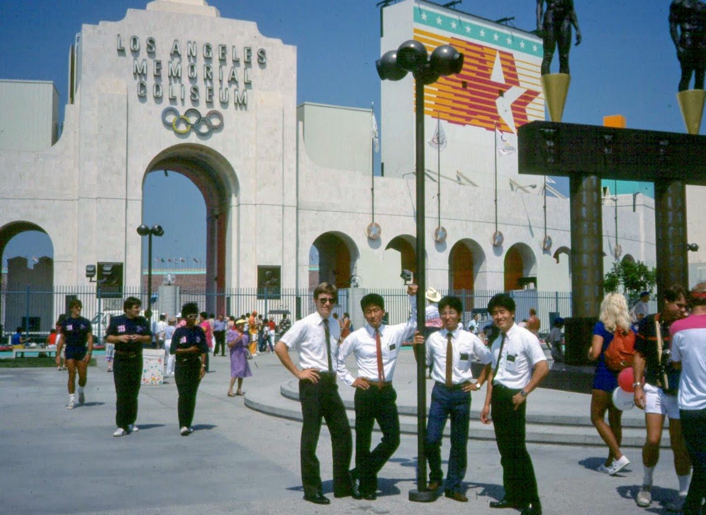

Summer Olympics of 1984 were held in Los Angeles, California^[LA hosted back in 1932 and will host again in 2028].
Spent majority of my time in LA in and around Olympic Boulevard and Western Avenue.
Olympic Blvd. is technically 10th Street but to commemorate the Olympic being hosted in LA, it was changed. According to Wikipedia
It was originally named 10th Street, but was renamed Olympic Boulevard for the 1932 Summer Olympics, as that was the occasion of the tenth modern event. Tenth Street School, at Olympic and Grattan, was founded in 1888 and has kept the original name. Parts of the old 10th Street exist as smaller streets near Hancock Park, in Westlake, and in the Central City East area southeast of Downtown. ^[https://www.wikiwand.com/en/Olympic_Boulevard_(Los_Angeles)]
Being a missionary at the time of the Olympics meant seeing the parade in Koreatown, visiting the main venue, Los Angeles Memorial Coliseum^[https://www.wikiwand.com/en/Los_Angeles_Memorial_Coliseum], and buoyed by the Olympic Spirit.
The members of the Korean Branch threw a going away party for me.
It happened to be on the evening of the Olympic Opening Ceremony. (this was before YouTube, so either you watched or you missed it entirely).
I remember some people brought their portable TVs to watch it during the party.
I have never forgot their kindness they showed me as a missionary. But in some sense I was treated more like a member.
I spent my entire mission in that Branch, even when I moved down to Bellflower/Norwalk area.
Members would take us to all their events.
Meet us at a local restaurant and feed us since most were first generation immigrants and were super busy.
I remember one time, we were asked,
what do you need?
We said few pots and pans would be nice. Next thing we know, people were donating pots and pans and some members even took us to a store to buy us new ones.
I tried to serve to my best ability as a missionary.
I got much more in return.
I felt I belonged to a community of saints that spoke Korean and shared a common heritage.
It gave me a foundation for the future
During my stay in Los Angeles area during 1983 and parts of 1984, I felt the sense of belonging to something bigger and the pride of representing something other than myself.

From Left to Right - Elder See, Elder Bak, Elder Pak